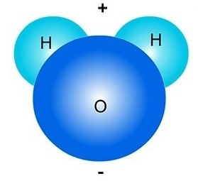
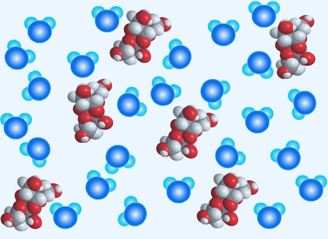
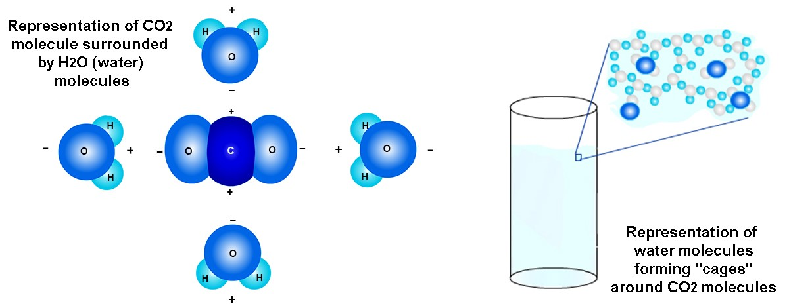

What happens to something when it dissolves? When you add sugar to a drink like lemonade or iced tea and
mix it around, the sugar will dissolve in the drink. This means that the little grains of sugar will break into smaller
and smaller sugar particles. Eventually, the sugar may break down into single molecules of sugar and spread throughout
the drink.
For example, as shown below, brown sugar was added to a glass of water. At first it sank to the bottom of the water (below, left picture).
After the water was stirred, the brown sugar is no longer visible. It has dissolved and broken down into particles
that are too small to see (below, right).
In general, a solid substance added to a liquid dissolves when the atoms or molecules of the solid break
away from the solid substance and become spread throughout the liquid.
- We call the liquid that something dissolves in the "solute." Water is often a solute that substances like salts or sugars dissolve in. Water molecules
(H2O) are able to dissolve these substances because each H2O molecule is positively charged (+) on one end and negatively (-) charged on the opposite end.
So, water molecules can pull on other charged particles, making them break apart. A water molecule is shown below.

- We call the substance that dissolves the "solvent." Salt (such as sodium chloride, NaCl) is one solvent that
dissolves in a solute (such as water). NaCl can dissolve in water because each NaCl molecule has a positively charged side (+) and a negatively charged side (-). This is shown below.
Salt dissolving in water. When table salt (NaCl)
is added to water, some H2O molecules will
pull on the
atoms of salt (both the positively charged sodium, Na+ ions and negatively charged chlorine, Cl- ions) that are on the outer
surface
of the salt crystals. The
negatively charged sides of the water molecules will surround the Na+ ions (which is positively charged (+) because
it had lost its electron to the Cl atom) and pull the Na+ ions
away from the Cl- ion.
Similarly, the positive sides of H2O molecules surround
the negatively charged Cl- ions and pull the Cl- ions from the Na+ ions. This is how the Na+ and Cl- ions break away
from the NaCl crystals and spread throughout the water.
NaCl Dissolved in water (H2O)
Sugar dissolving
in water. When sugar is dissolved in water, some H2O (water) molecules
will bond with the molecules of sugar that are on the outer
surface of the sugar crystals. C12H22O11 is the chemical formula for the molecules that make
up both brown and white sugar. The oppositely-charged areas
of the water and sugar molecules will attract each other. If the electric forces that cause the H2O-sugar molecule bondings are "strong" enough, the
sugar molecule will be "freed" from its bonds with other sugar molecules and move about in the water.
The picture below represents sugar molecules (white/red) dissolving in water molecules (darker/lighter blue).

Carbon dioxide dissolved in water. Carbon
dioxide (CO2)
molecules can be dissolved in liquids, including in water. This causes the "fizziness" of drinks like soda. CO2 can
dissolve in water because CO2 and H2O molecules are attracted
to oppositely charged parts of each other. These attractions help to "hold" the CO2 in the water. The picture below on the left shows a simplified image of
how electric forces from H2O molecules may "hold" CO2 in the liquid. Note that oppositely-charged areas of the CO2 and H2O molecules are attracted to each other. The picture below on the right shows a slightly
more complex image of how H2O molecules might surround CO2 molecules in the water. Some people say that the H2O molecules form "cages" around each CO2 molecule.

CO2 is also kept in the soda because there is a high pressure from the air above
the soda in the bottle before it is opened. This high pressure helps keep the CO2 that is near the surface of the soda from "escaping" the liquid and into
the trapped air in the bottle.
Once you open the bottle, the high-pressure air at the top of the bottle is released
into the (lower-pressure) atmosphere. As a result, there is now less pressure from air at the surface of the soda.
Because of this, some CO2 may
be able to "escape" from the soda. When this happens, sometimes enough CO2 escapes that the CO2 also pushes some of the bubbly liquid out with it. This has probably happened
to you (from time to time) when you open a bottle of soda.
When you shake a bottle of soda before opening it (which I do not recommend!), some
of the CO2 molecules
will group together to form larger bubbles in the soda. When this happens, the CO2 bubbles have more mass and are better able to break through H2O--H2O bonds in the liquid above them to escape
into the atmosphere. This is why when you shake the soda bottle before opening it, the soda will probably "explode"
out of the bottle. You'll have a big mess to clean up!
Saturation point
When do substances stop dissolving?
There is a limit to how much of a substance (such as table salt, NaCl) can dissolve in water. For example, if you are adding
salt to water in a glass, and keep stirring the water, eventually no more salt will break up and dissolve. This
is called the saturation point. The saturation point in salt water happens when there are JUST enough
H2O molecules to surround and hold up all the (heavier) Na+ and Cl- atoms in the water. (See the picture in the section Salt
dissolving in water above).
When the concentration of salt in water is greater than the saturation point, the Na+
and Cl- atoms rejoin to form NaCl molecules. If the concentration of salt in water is much higher than the saturation
point, you will start to see salt crystals building up. This buildup may be at the bottom of the glass (since
NaCl is more dense than H2O molecules) or places that have little bumps (nucleation sites).
The graph below shows the relationship between water temperature and the "solubility"
of different types of salts. The solubility of the salt is how much of the salt (in grams) can be dissolved in
100 grams of water (at that water temperature).
Let's think more about what happens to a glass of salt water after 3 weeks...


{kind=link}
{kind=link}